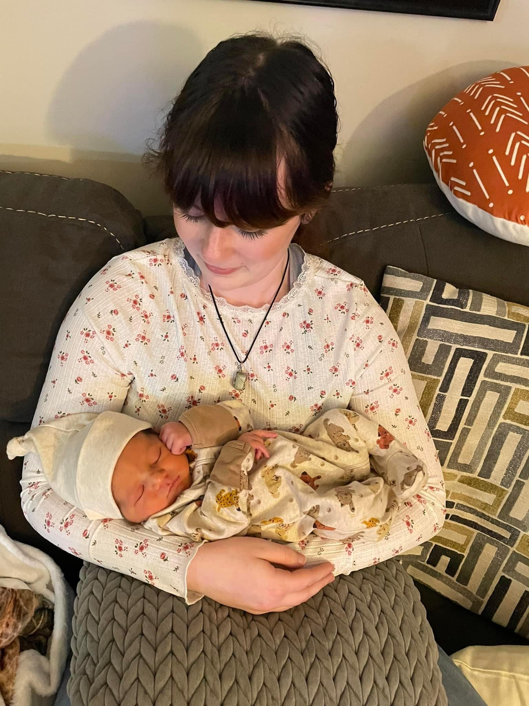
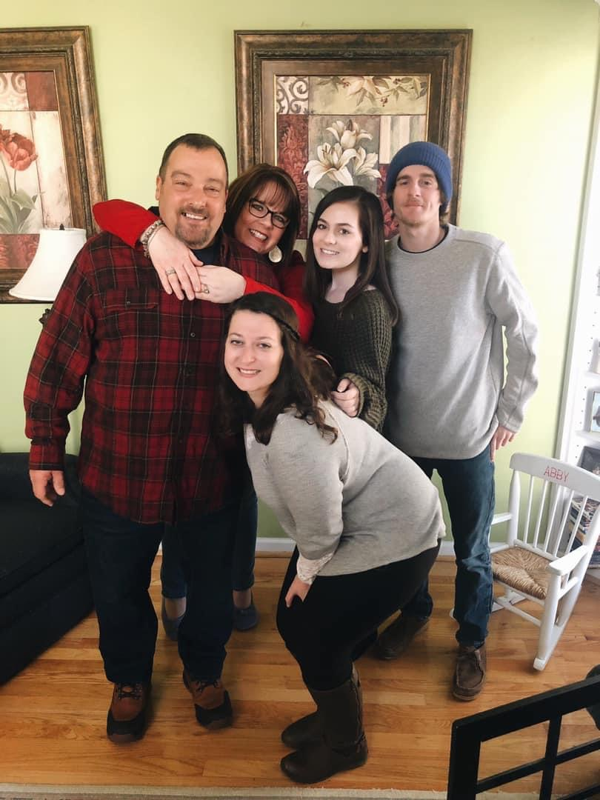
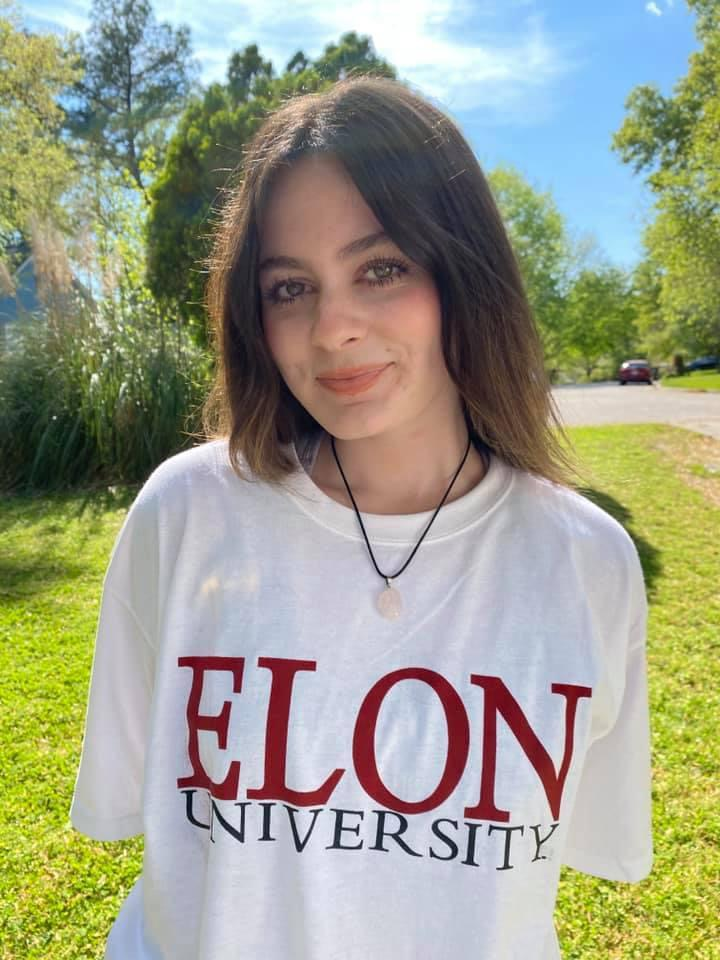
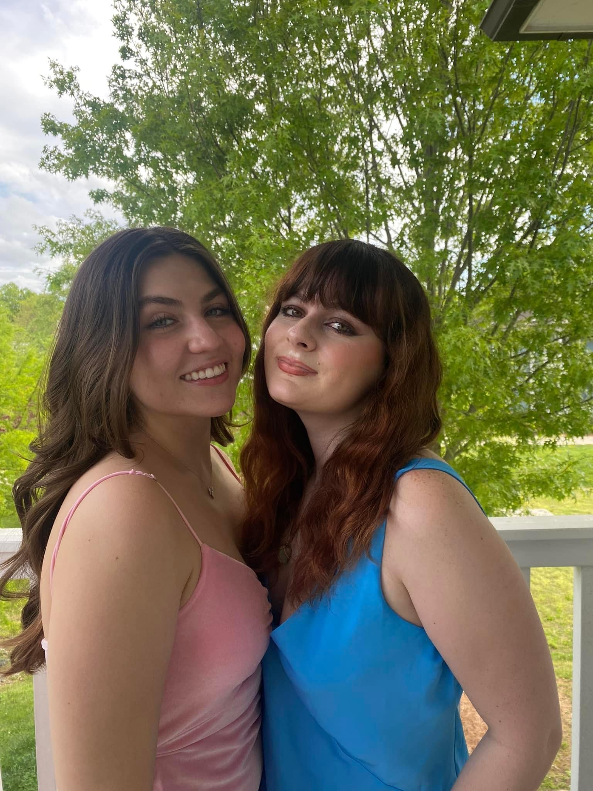
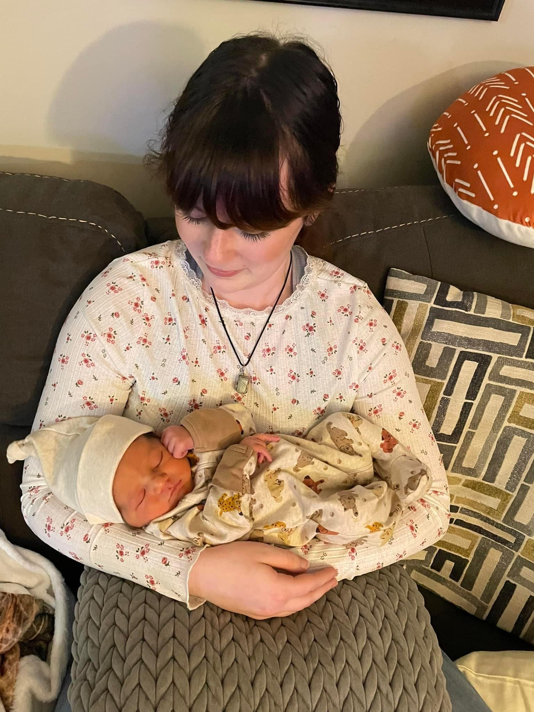
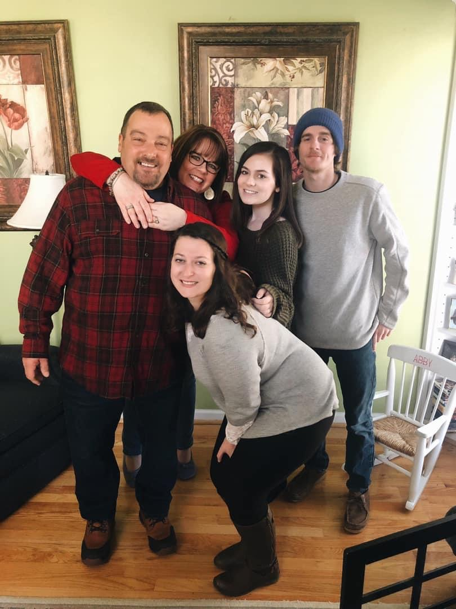
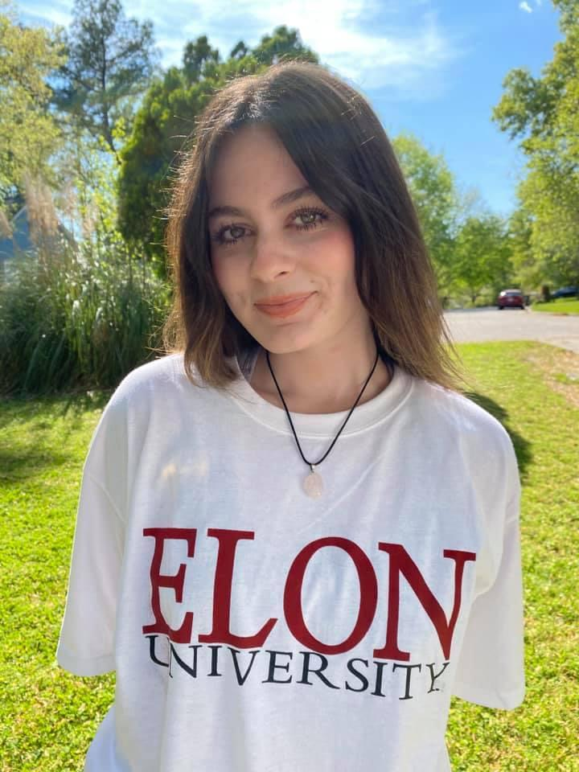
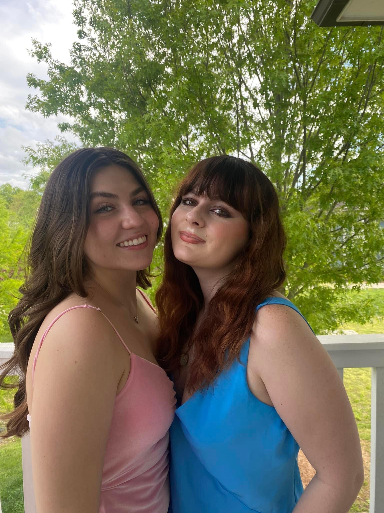

About Abigail Hayes
Hi! I am born and raised from Raleigh, North Carolina. I am a second-year student studying Strategic Communications and Professional Writing. I have been apart of a few things on campus including being a member of Alpha Xi Delta sorority, office assistant, Elon 1010 Peer Educator, and a fashion writer for The Edge Magazine. I am the youngest out of three siblings with my oldest sister being 30 years old. My first nephew was just born at the beginning of March, and my niece is due in August! Being close with my family is one of my core values and believe that without them, I wouldn't be anything! Growing up, my family taught me that education is one of the most important fundamental, privileged things that I could attend. My father never attended college and my mom attended a two-year college, therefore making me a first-generation college student. Becoming the first person in my family to graduate from a four-year university means so much to me.
 






